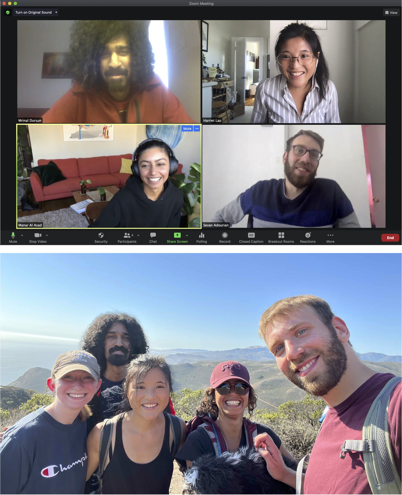

Who we are ...

Bottom: Labor Day (2022) group hike at Rodeo beach.
Harriet Lau:
Principal Investigator
CV here.
Nick Wagner:
Postdoctoral Researcher
Lunar tidal tomography.
Allie Coonin:
4th year PhD student
Transient rheology and solid Earth-ice-sea level on paleo and modern timescales.
Steven Ramirez:
2nd year PhD student
Core-mantle boundary dynamics.
Past members ...
Sevan Adourian:
Former postdoctoral researcher now faculty at UNC.
Theoretical seismology, attenuation at seismic and geodetic timescales.
Manar Al Asad:
Former PhD student, now Daly fellow at Harvard University
Geodynamics, long term thermal evolution of the mantle and core, transitions of convective style.